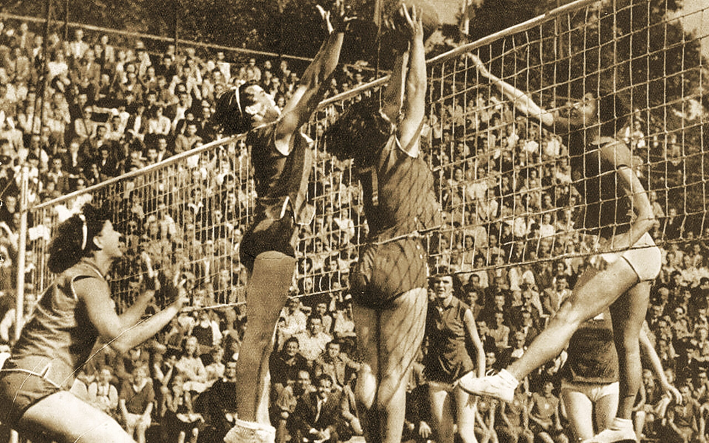

A massachusettsi Holyoke városában 1895-ben William G. Morgan megalkotott egy új szabadidős játékot Mintonette néven, a tenisz és a kézilabda egyes elemeit is felhasználva. A játékot főleg teremben lehetett játszani, és eredetileg a Fiatal Katolikus Férfiak Szövetsége már korosabb, de mégis atletikus beállítottságú tagjai számára ötlötte ki Morgan a túlságosan is erőszakosnak tartott kosárlabda helyett.
A Morgan által papírra vetett első, kezdetleges szabályok a háló méretét 1,98 méterben, a pályáét pedig 7,6×15,2 méterben határozták meg, s ekkor még a játékosok számát nem korlátozták. Egy-egy meccs kilenc labdamenetből állt, és mindkét csapat játékosai korlátlanul érinthették a labdát, mielőtt átütötték volna azt az ellenfél térfelére. A hölgyek – ujjaik védelmében – megfoghatták, majd vissza is dobhatták a labdát.
A Springfieldben rendezett első, 1896-os bemutatómeccsen az egyik nézőt, bizonyos Alfred Halsteadet megihlette a játék „röpködő” természete – tőle ered a volleyball, vagyis a röplabda név. A sportág eleinte elsősorban az amerikai kontinensen terjedt el, néhány év múlva azonban már Kínában, Japánban és a Fülöp-szigeteken is ismerték. Az I. világháborút követően gyors ütemben nőtt a népszerűsége Európában is. A kezdeti teremjátékot már szabadtéren is űzték, tornákat is rendeztek, és a fejlődés nyomán szükségessé vált a játékszabályok módosítása. A játék meggyorsítása érdekében térfelenként már csak három labdaérintést engedélyeztek, a labdakezelés módját megszigorították, meghatározták az úgynevezett forgásszabályokat, és ezzel egyidejűleg a játékosok számát hatra csökkentették.
A magyar röplabdázás legfényesebb időszaka az 1960-as, 1970-es évekre esett. A férfiválogatott 1963-ban, a női 1975-ben szerzett Eb-ezüstérmet. Olimpián a nők három, a férfiak egy alkalommal vettek részt. A sikerekre visszagondolva különösen fájó, hogy a sportág hazai népszerűsége, eredményessége manapság nyomaiban sem emlékeztet korábbi önmagára.
